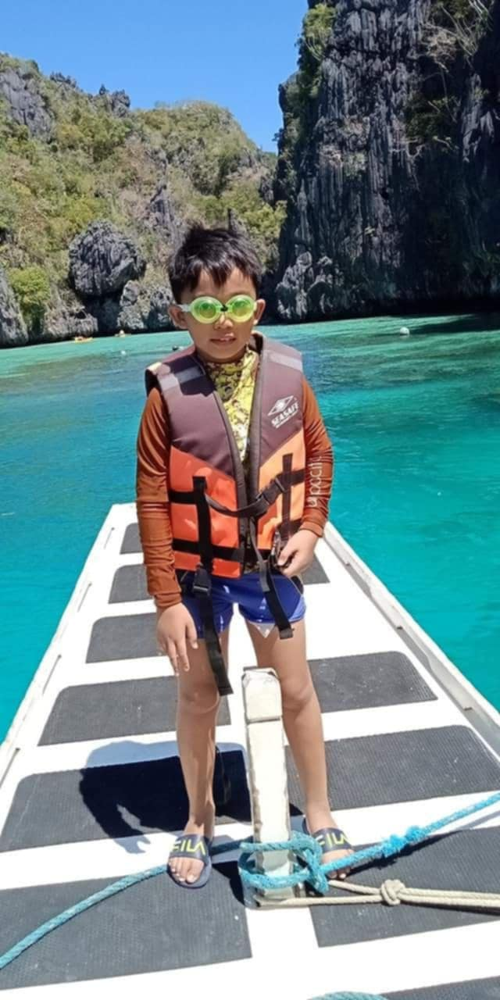
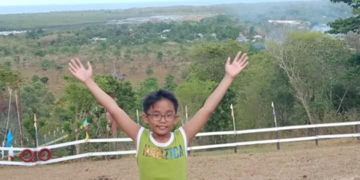
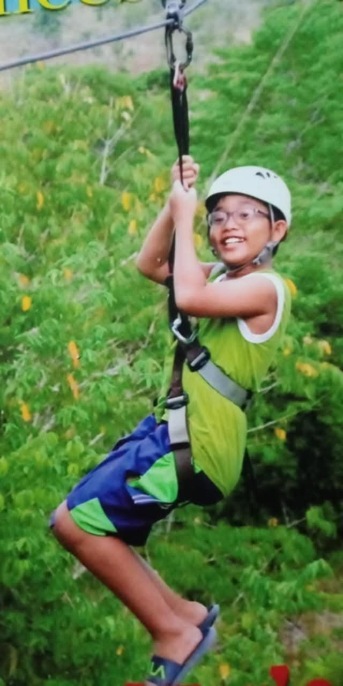
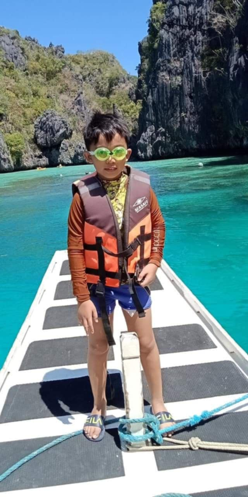
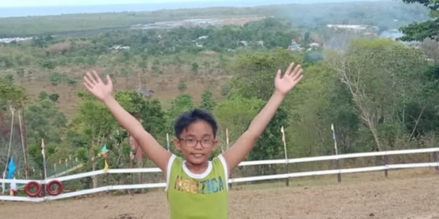
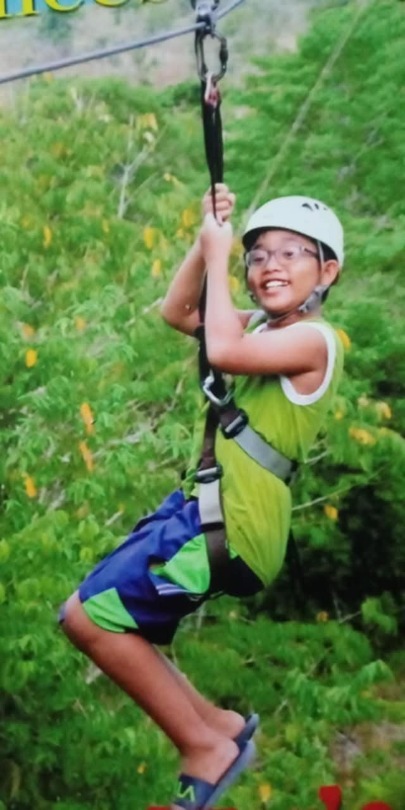
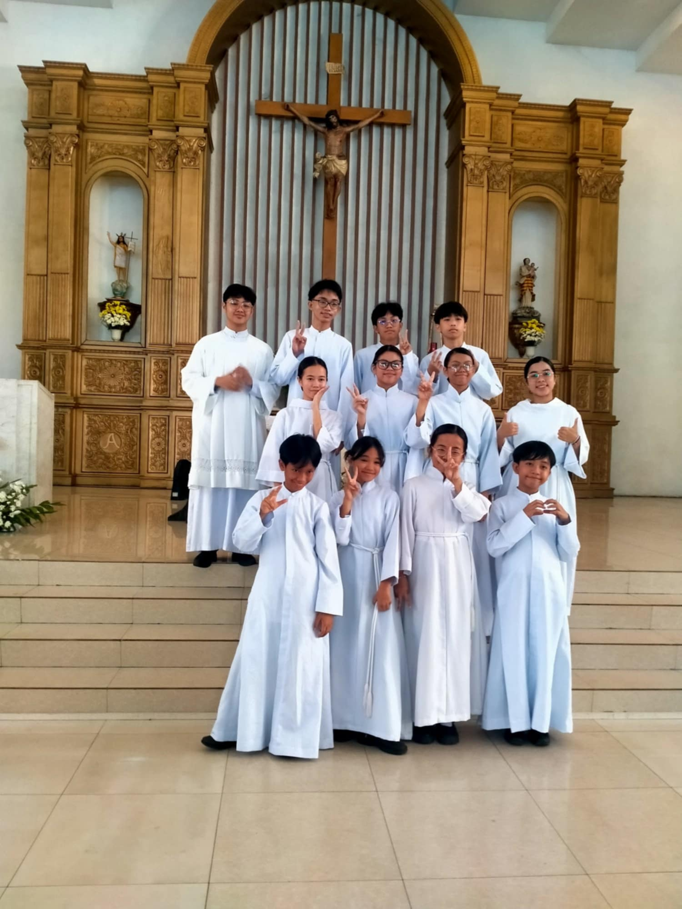
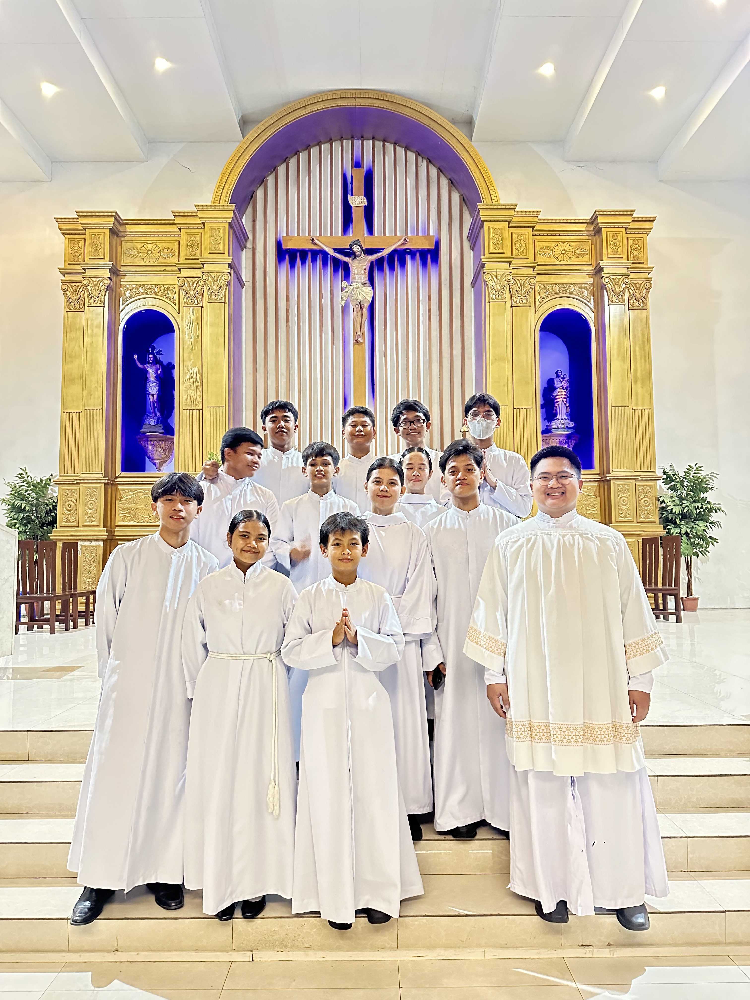
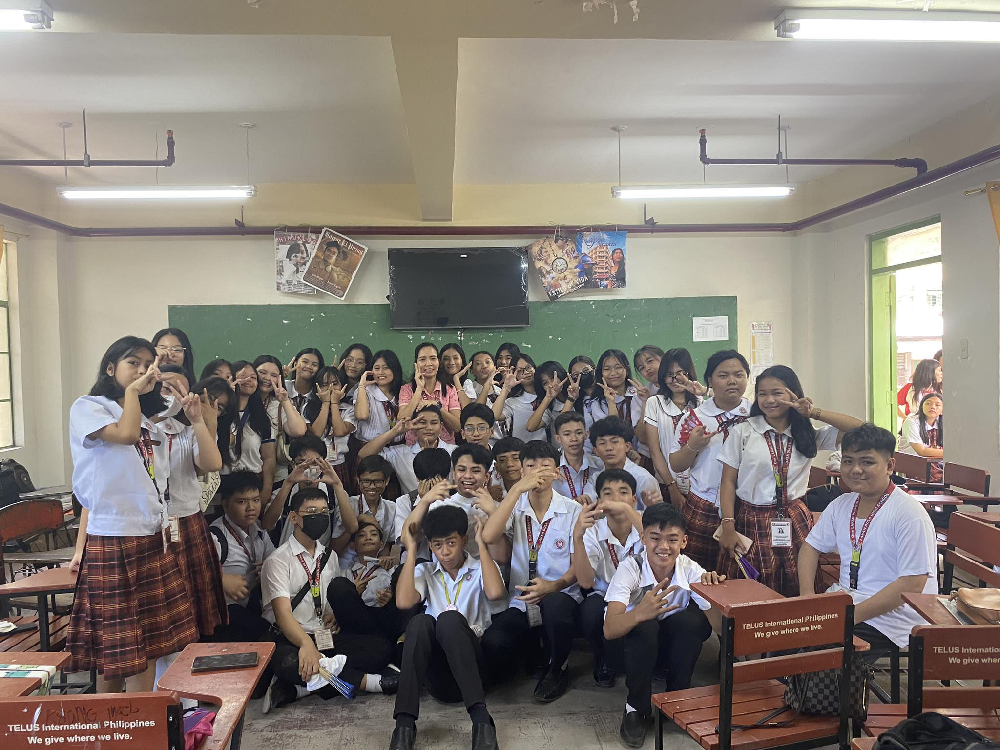

I'm Jay Gabriel M. Logmao, Jay in short, a 14 years old student at Lakan Dula High School, living in Brgy 128 Balut Tondo, Manila.
There are no such impressive events that happened in my childhood that I can recall, but I have a happy memorable experience from when I was 9 years old. We went to El Nido, Palawan for our summer vacation. We stayed there for 5 days. We visited famous islands in El Nido, like the Underground River, Hidden Island, Lulu Island, and Courie Island. The beaches were crystal clear. We did island hopping, snorkeling, and ziplining. I wish to go back there someday and visit the famous Coron Island.
.jpeg) 





We are not a well-off family, but I am thankful that my parents can provide us with our daily needs. I come from a very simple family where love and respect are important. My parents sometimes have misunderstandings, but they talk about it calmly. I don't see them shouting at or hurting each other.
Being in Grade 9 is very challenging for me. Having new teachers and classmates, I challenge myself to get good grades this year. I need to study hard and work hard for it.
My favorite color is green and I love to eat Adobo. I love to play online games during my free time. I also love to play badminton with my classmates. We often hang out at one of my friends' houses and play online games together.
I also serve as an altar server at our church, the Parish of the Risen Christ. Because of this, I feel closer to God and have faith in Him. Being with my family and having good health makes me happy. Sometimes, when I have enough money, I like to go out alone to get some fresh air.
 I want to finish my studies and become a chef. I want to share my passion for cooking and open my very own restaurant for all my future customers.
I believe in the saying, "Do your best and God will do the rest." I need to work hard, put my heart into the things I want to achieve, and pray to God to help me achieve those dreams and endeavors.
My life may seem simple, but it is filled with love, respect, and determination. I am grateful for my family, my faith, and the opportunities I have. With hard work and God's help, I am confident that I can achieve my goals and make my dreams come true.
 Facebook Instagram Tiktok